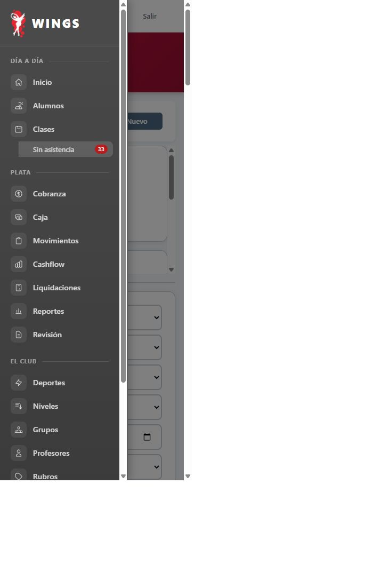
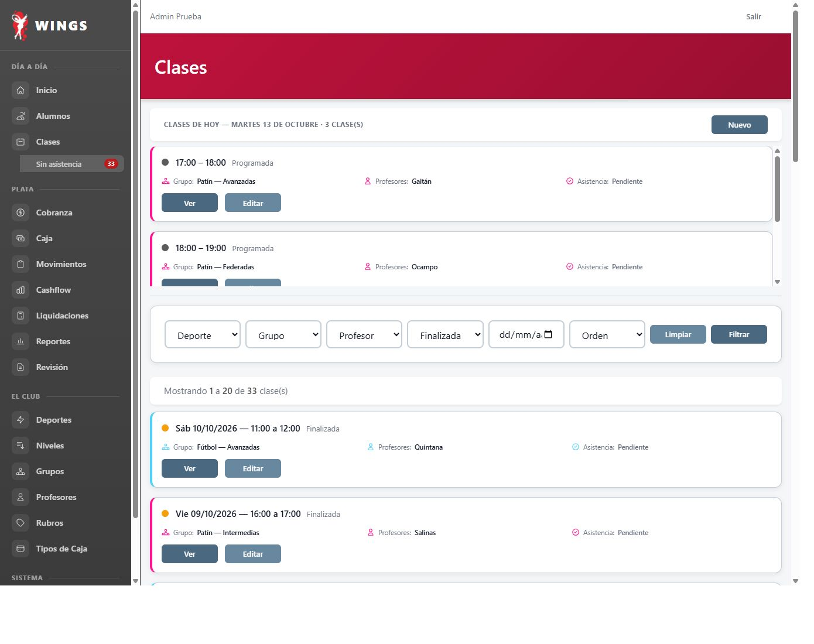
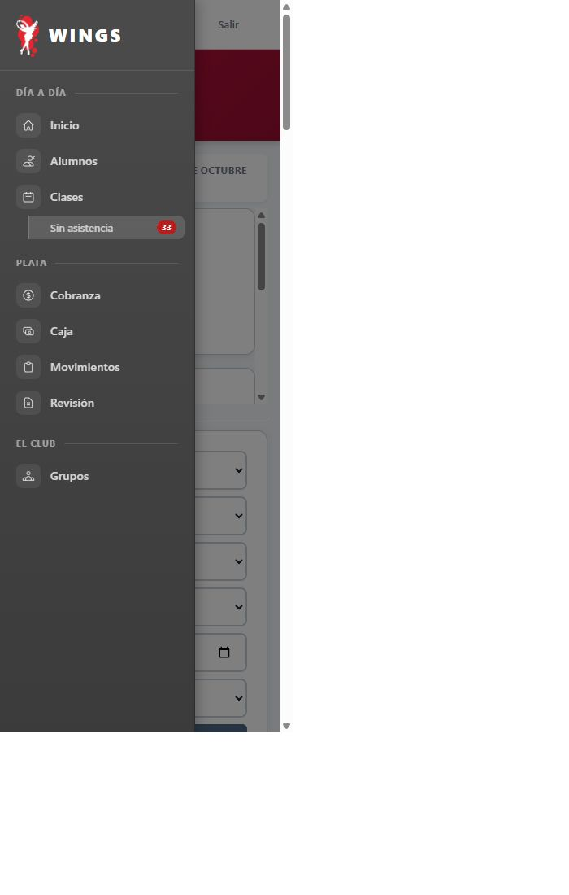
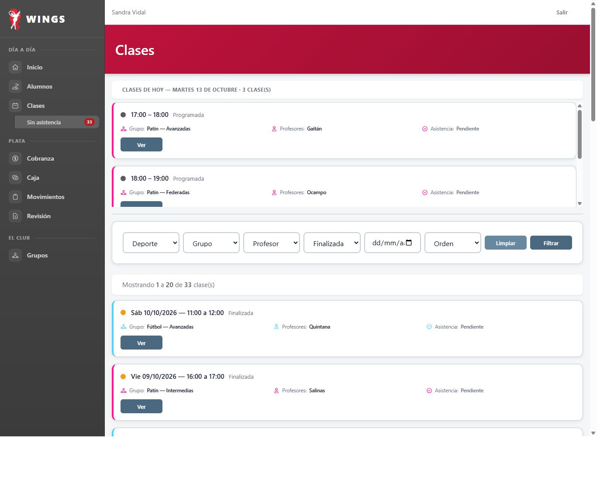
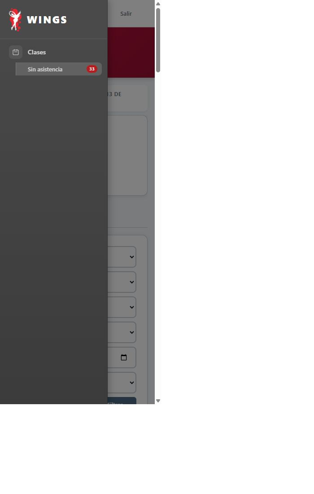
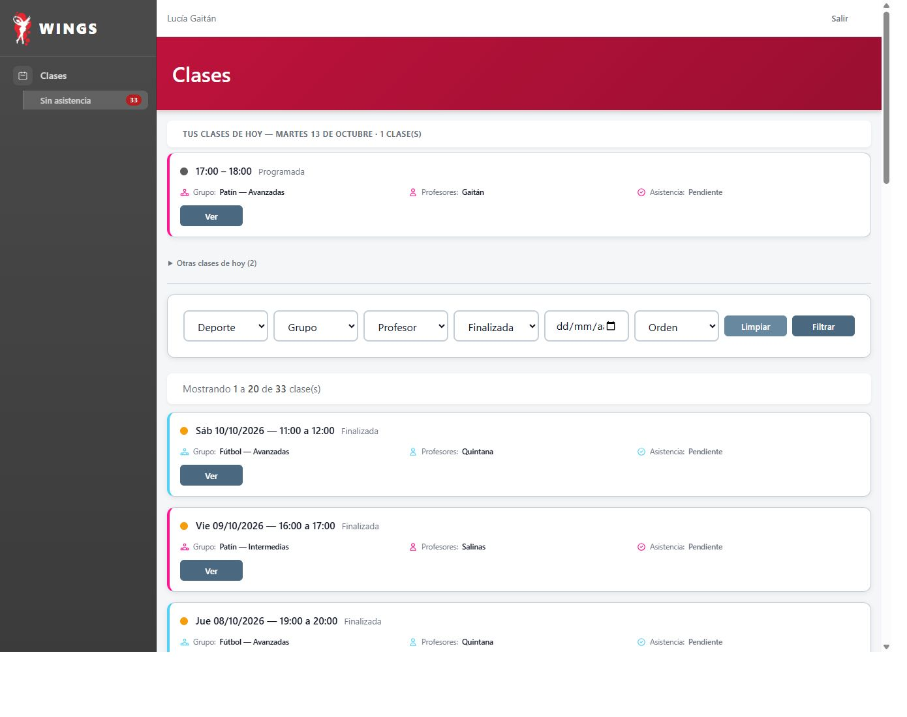
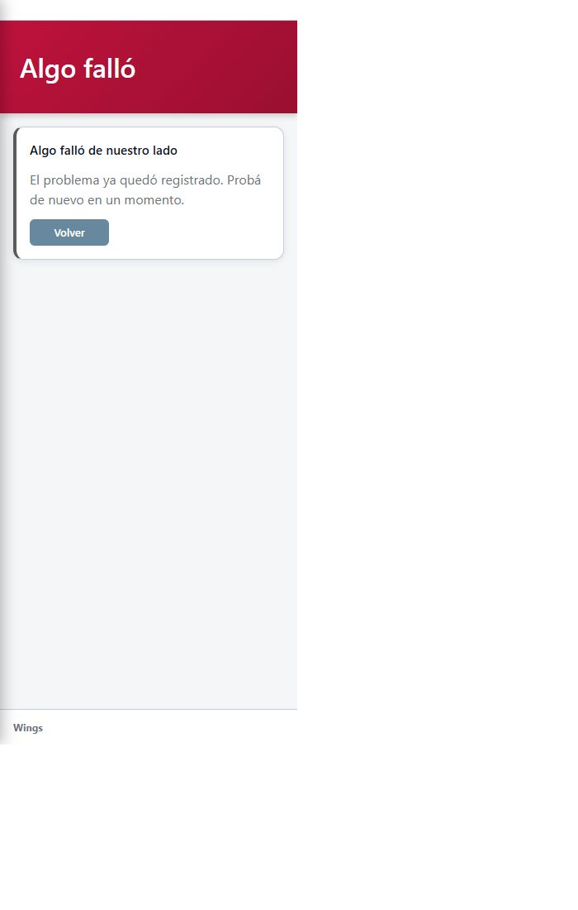
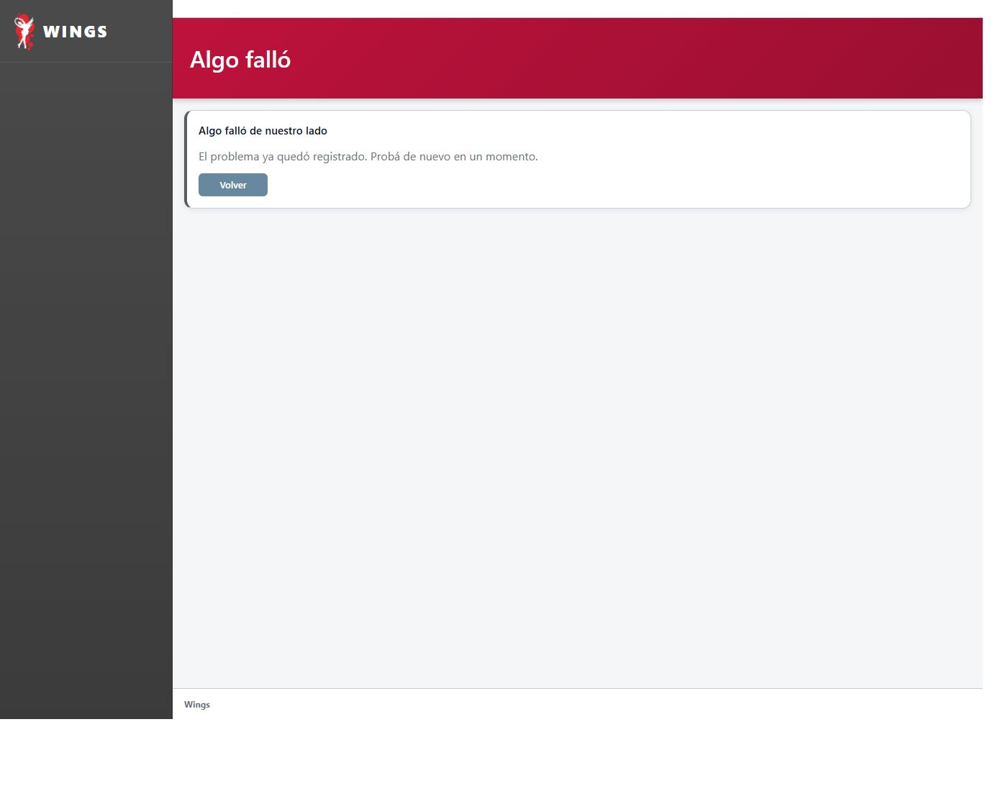
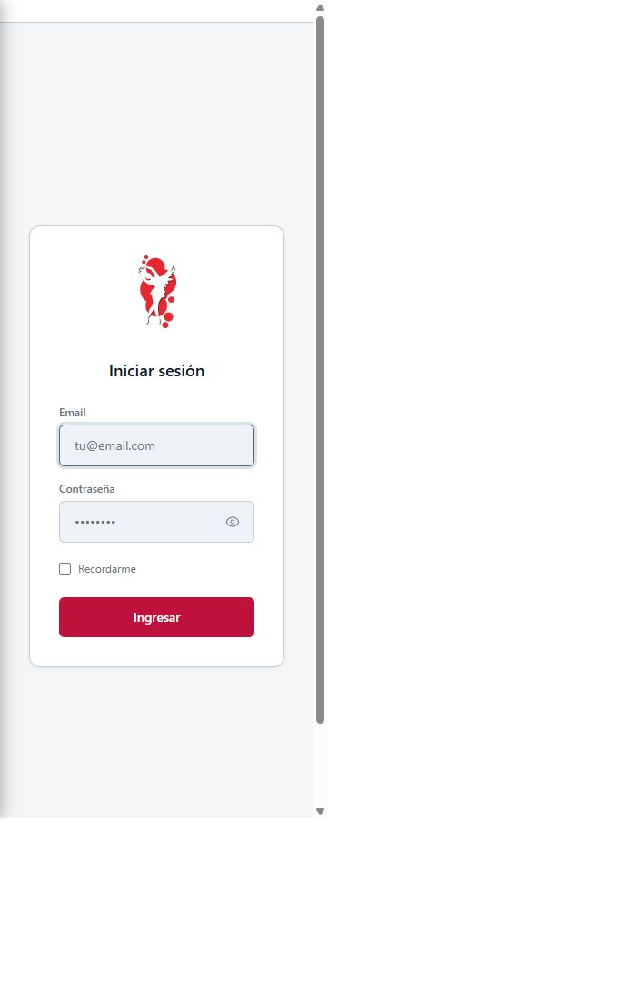

T7 · Menú antes y después
Capturas propias de Chrome. Mismo HTML real de Wings, CSS histórico frente al actual, con marcos de ancho comprobado. Las ocho parejas de menú/error son idénticas.
Informe y límites · Comparaciones y hashes
ADMIN · celular 360 Antes 
Después ADMIN · escritorio 1366 Antes 
Después OPERATIVO · celular 360 Antes 
Después OPERATIVO · escritorio 1366 Antes Después 
PROFESOR · celular 360 Antes Después 
PROFESOR · escritorio 1366 Antes 
Después Error sin contexto · celular 360 Antes 
Después Error sin contexto · escritorio 1366 Antes Después 
Login · control del marco 360 Después · el formulario entra completo 